Technical Sound Designer
As a senior technical sound designer for video games, I integrate deeply with development teams to design, implement, and manage the complete auditory experience.
My sound design style is functional and adaptive—always catering to specific gameplay mechanics to elevate the player experience. By leveraging deep expertise across game engines and audio middleware, I manage the full audio pipeline from initial concept to technical implementation.
Whether it’s crafting high-impact sound design, engineering adaptive music systems, or building custom audio tools for the dev team, I can help bring your game's vision to life.
Check out the projects below to see if my skills can fit your needs...
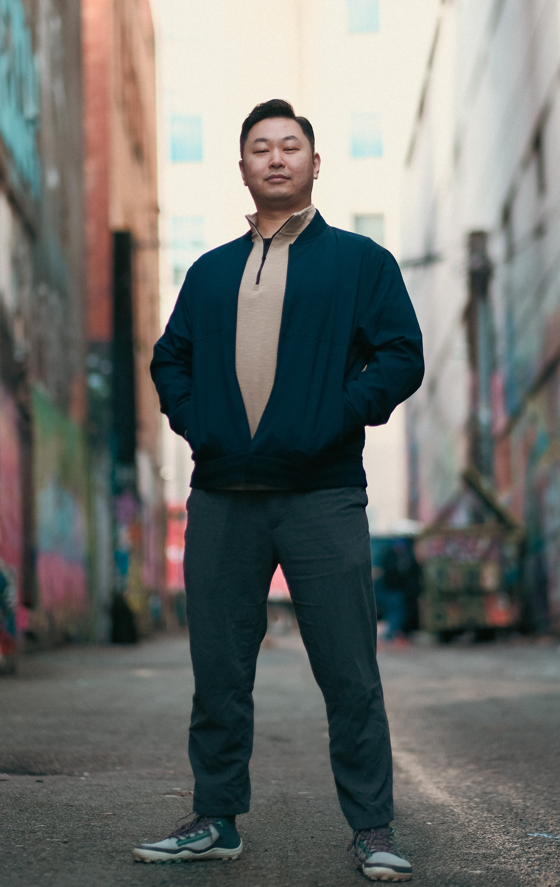
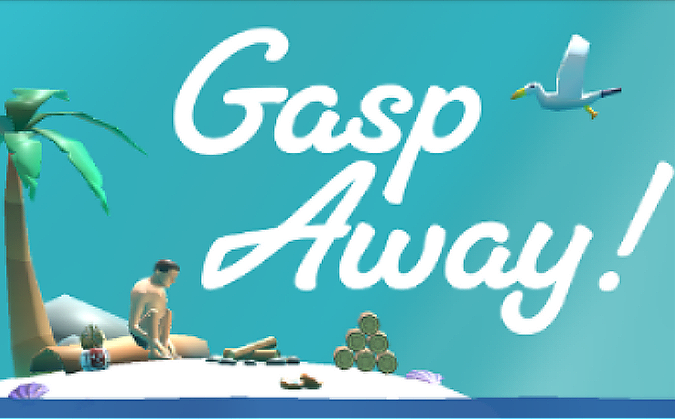
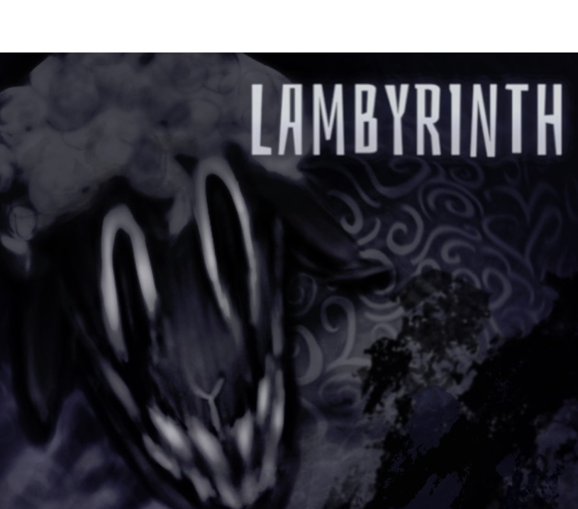
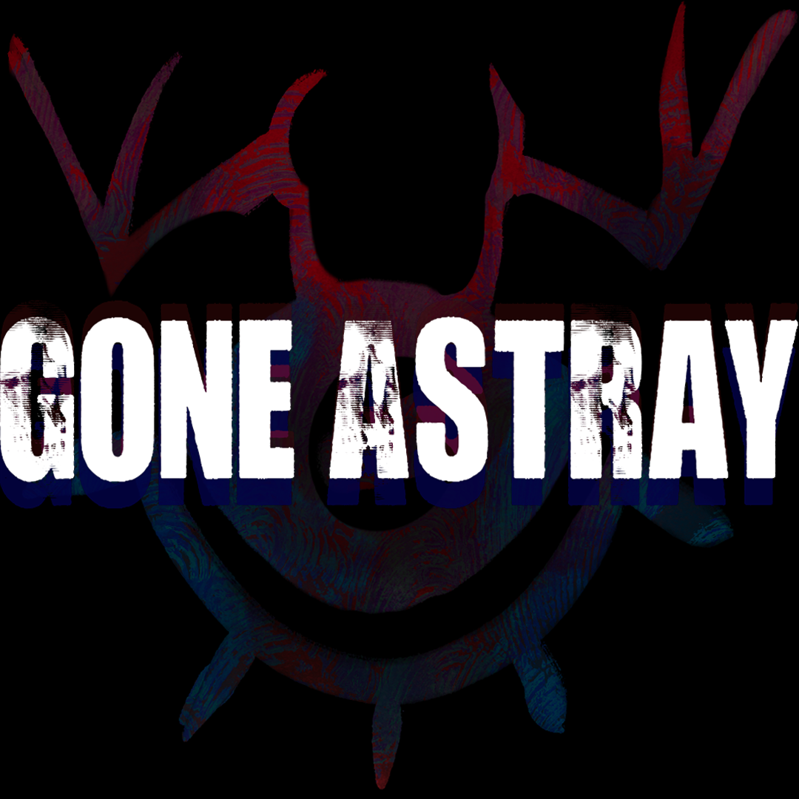
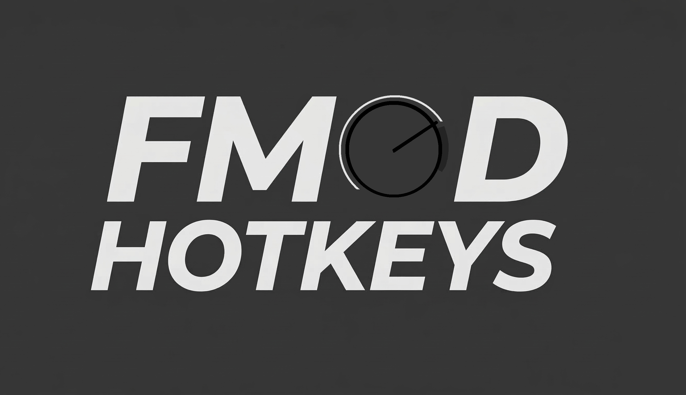
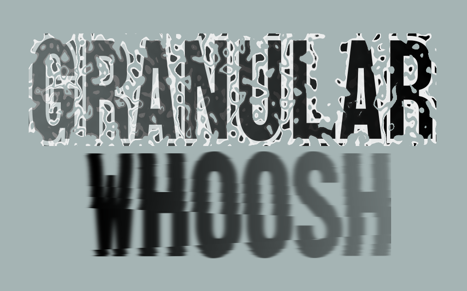
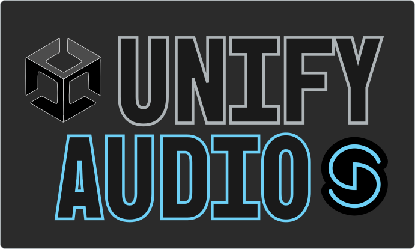
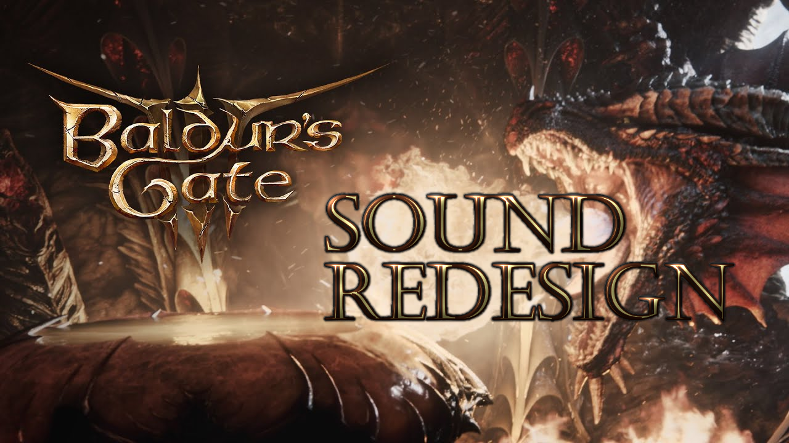
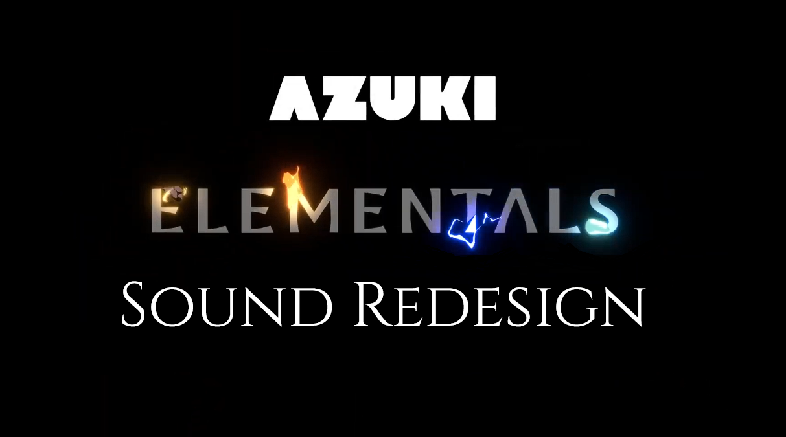
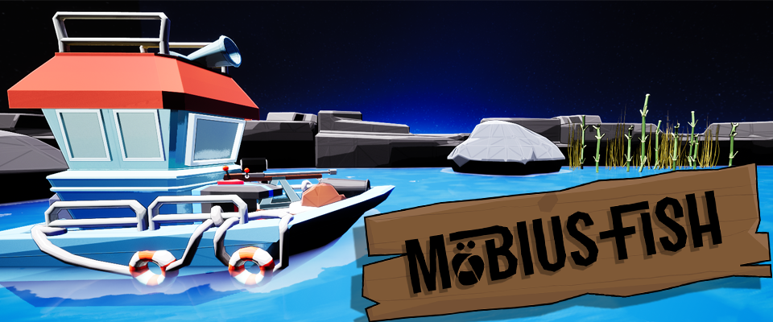
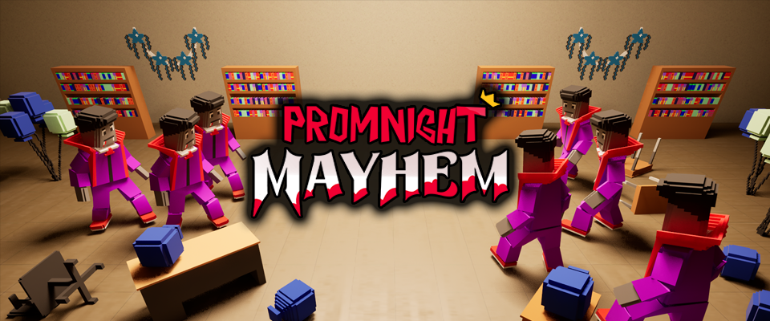
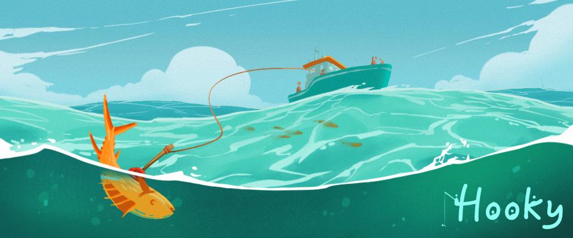
I'm available for full-time opportunities and freelance contract projects